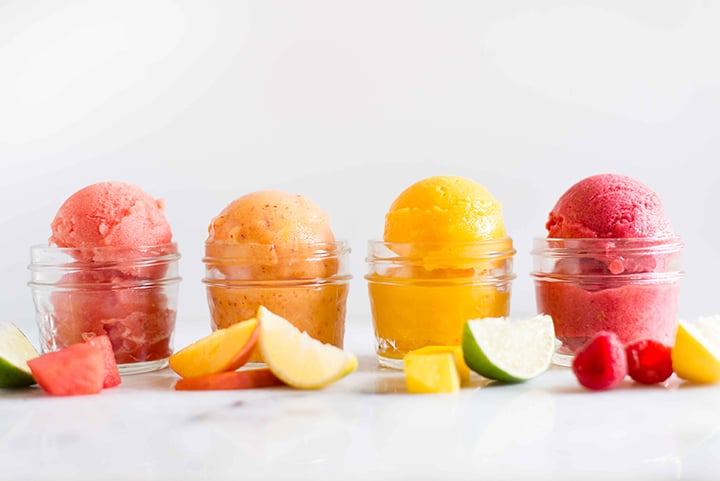

How To Make Sandwiches Seafood Ramen Fruit Sorbet
Ingredients
- Your favourite fruits (frozen, or fresh bought and then diced and frozen)
- Simple syrup as a sweetener (or agave/honey/maple syrup)
- And just a squeeze of lemon juice or lime juice (this isn’t needed if the fruit is sour).
Method
-
Add the frozen fruits to a blender and make a thick puree.
- Then add the simple syrup(agave/honey/maple syrup,if u want the sorbet to be a little liquidy.) or add a little powdered sugar according to your taste.
-
Add the lemon/lime juice and mmix throughly.
-
You can even add fruit chuncks if you want for a different texture.
-
Freeze for several hours if not overnight.
-
Scoop it up & Enjoy!!
You Made Some Sandwiches Seafood Ramen Fruit Sorbet!
